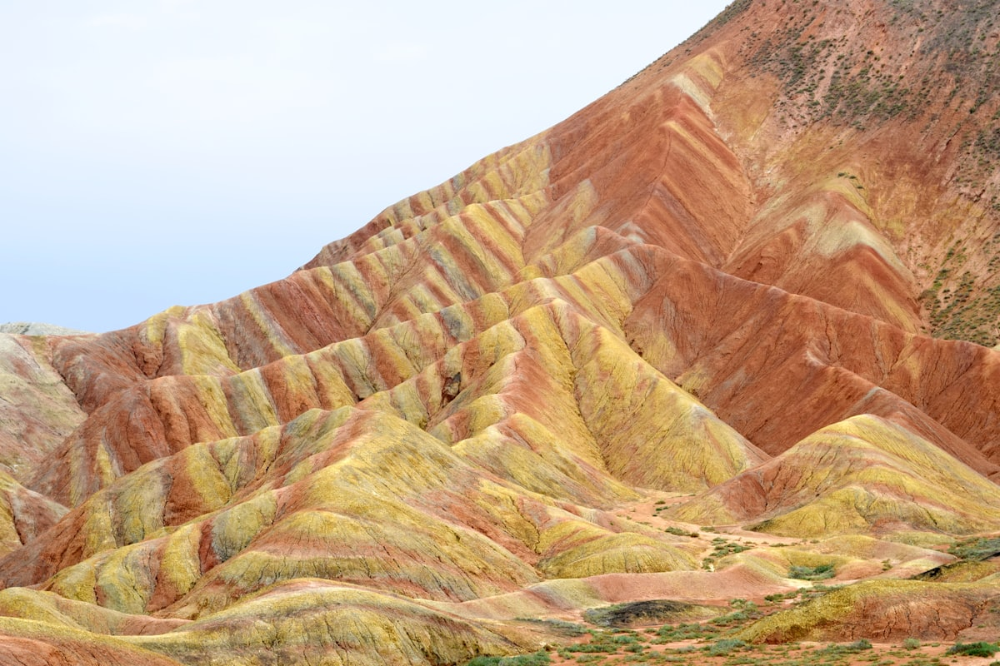
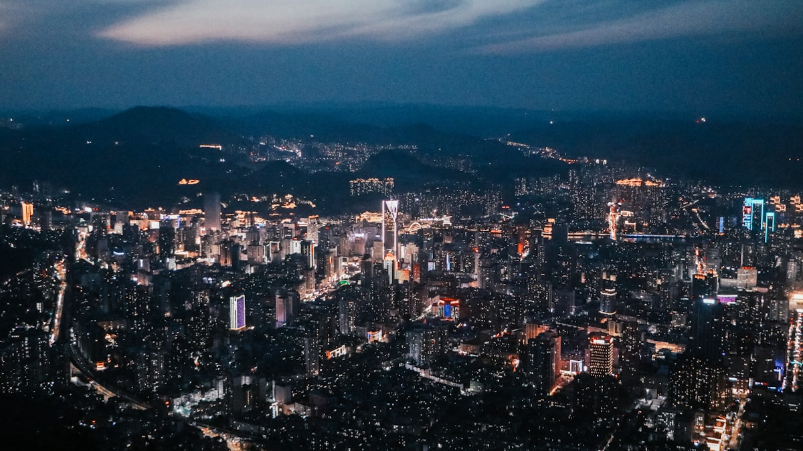
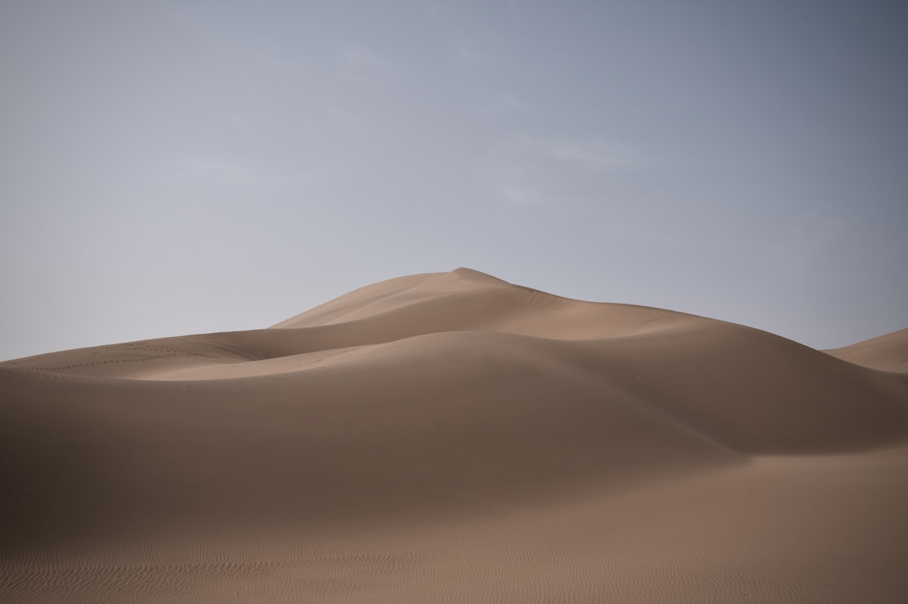
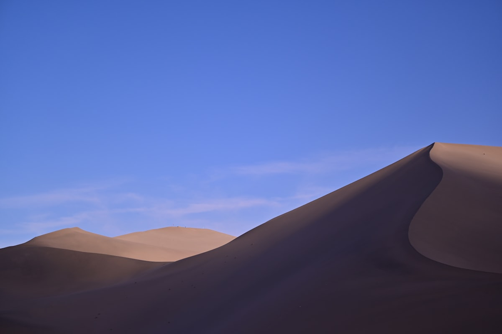

1核心结论
兰州
→
张掖丹霞
→
嘉峪关
→
敦煌
→
鸣沙山
→
莫高窟
→
返程
🕐 10 天怎么安排最合理
甘肃是一条狭长的河西走廊，城市之间动辄 200–500 公里，10 天刚好够把「兰州—张掖—嘉峪关—敦煌」整条丝路主轴走完：兰州吃一碗牛肉面看黄河，张掖看七彩丹霞，嘉峪关看天下第一雄关，最后在敦煌把莫高窟和鸣沙山一次看够。动车串联四城，单段 1.5–3 小时，节奏刚好。
| 事项 | 结论 |
|---|---|
| 事项 | 结论 |
| 推荐方案 | 10 天 9 晚：兰州（2 晚）+ 张掖（1 晚）+ 嘉峪关（1 晚）+ 敦煌（4 晚）+ 天水（1 晚） |
| 返程约束 | 第 10 天从兰州返程 |
| 行程链 | 兰州 → 张掖 → 嘉峪关 → 敦煌 → 兰州 |
| 预算（人均） | 经济 5000–7000 ／ 标准 8000–11000 ／ 舒适 14000–19000 |
| 三件提前事 | ① 莫高窟门票提前 15–30 天实名预约 ② 鸣沙山避开正午 ③ 张掖丹霞选日落时段 |
| 季节提醒 | 5–10 月最佳；7–8 月敦煌暴晒，需防晒；冬天人少景冷 |
| 交通卡 | 四城间动车直达，敦煌进莫高窟坐景区直通车 |
⚠️ 两个容易忽略的点
① 莫高窟门票非常难抢，旺季 A 类票（含数字电影+8 个窟）需提前一个月实名预约，临时只能买应急票（4 个窟）。② 敦煌紫外线极强、昼夜温差大，防晒 + 补水 + 防风外套缺一不可；鸣沙山最好日落前后去，正午烫脚。
2推荐行程 · 10 天版
以下为 10 天 9 晚的河西走廊节奏：沿动车线自东向西推进，兰州进出，敦煌留足 3 天深度游。
| 日期 | 行程 | 过夜地 | 主题 |
|---|---|---|---|
| D1 抵兰州 | 入住西关十字一带，傍晚黄河铁桥 + 白塔山夜景 | 兰州·西关 | 抵达 + 预热 |
| D2 | 兰州：中山桥 + 黄河母亲雕像 + 甘肃省博物馆 | 兰州·西关 | 黄河风情 |
| D3 | 动车赴张掖，下午七彩丹霞（日落最佳） | 张掖 | 丹霞盛宴 |
| D4 | 动车赴嘉峪关：关城 + 悬壁长城 + 天下第一墩 | 嘉峪关 | 雄关漫道 |
| D5 | 动车赴敦煌，傍晚鸣沙山月牙泉（日落） | 敦煌 | 大漠初遇 |
| D6 | 莫高窟（全天）+ 敦煌夜市 | 敦煌 | 千年壁画 |
| D7 | 玉门关 + 雅丹魔鬼城（西线一日，包车） | 敦煌 | 丝路残阳 |
| D8 | 敦煌市区：敦煌博物馆 + 反弹琵琶雕塑，晚间飞/动车回兰州 | 兰州 | 回城休整 |
| D9 | 兰州 → 天水：麦积山石窟一日 | 天水/兰州 | 东方雕塑 |
| D10 返程 | 上午自由活动，下午从兰州返程 | — | 收尾 |
🧭 路线可调原则
麦积山在甘肃最东端，与河西走廊是两个方向，想省时间可砍掉天水（D9），把多出的 1 天留给敦煌雅丹或兰州刘家峡。西线雅丹往返约 400 公里，必须包车或跟一日游。
3逐小时时间线
以下为 10 天全程的逐小时执行时间线，可当作「当天打开照着走」的清单。标注 ※ 的可选项视体力与天气取舍。
D1 · 抵达兰州
入住西关十字
🚇 抵达日
| 时间 | 事项 |
|---|---|
| 14:00–17:00 | 抵达兰州（高铁到兰州西站，飞机到中川机场，城际 40 分钟进城） |
| 17:30–18:30 | 办理入住（推荐西关十字/张掖路，近中山桥） |
| 19:00–21:00 | 中山桥（黄河铁桥，免费）+ 白塔山夜景，河边吹风 |
| 21:00 | 晚餐：正宁路夜市，喝一碗兰州牛肉面+烤串 |
西关十字离中山桥、黄河风情线步行可达。正宁路夜市的『马爷牛奶鸡蛋醪糟』很出名。
D2 · 兰州黄河风情线
黄河之都一日
🌉 黄河日
| 时间 | 事项 |
|---|---|
| 08:30–10:00 | 兰州牛肉面：推荐『马子禄/吾穆勒』，早起吃头汤最香 |
| 10:30–12:30 | 甘肃省博物馆（免费需预约）：铜奔马（马踏飞燕）、丝绸之路文物 |
| 12:30–13:30 | 午餐：市区 |
| 14:00–17:00 | 黄河母亲雕像 + 水车博览园（免费），黄河边散步/坐羊皮筏子 |
| 18:30–20:00 | 晚餐：黄河边烤肉，看中山桥亮灯 |
甘肃省博的铜奔马是国宝级文物，一定别错过；周一闭馆。羊皮筏子体验约 60–80 元。
D3 · 张掖七彩丹霞
丹霞盛宴一日
🌈 丹霞日
| 时间 | 事项 |
|---|---|
| 08:00 | 动车兰州→张掖（约 3.5h） |
| 12:00–13:00 | 午餐：张掖市区，尝搓鱼子 |
| 14:30 | 市区乘车赴七彩丹霞景区（约 1h） |
| 15:30–19:30 | 七彩丹霞（参考价 54 元+区间车 20 元）：4 个观景台，等日落金辉 |
| 20:00 | 返回市区晚餐，夜宿张掖 |
张掖丹霞的精华在日落前后的色彩，务必留到傍晚。早上丹霞是灰的，颜色要靠斜阳。
D4 · 嘉峪关
天下第一雄关
🏯 雄关日
| 时间 | 事项 |
|---|---|
| 08:30 | 动车张掖→嘉峪关（约 1.5h），存包后出发 |
| 10:30–14:00 | 嘉峪关关城（参考价 110 元）：内城、瓮城、柔远门，登楼远眺祁连雪山 |
| 14:00–15:00 | 午餐：景区附近 |
| 15:30–17:30 | 悬壁长城（联票含）或 天下第一墩：明代长城尽头 |
| 18:00 | 晚餐：嘉峪关烧烤，夜宿嘉峪关 |
嘉峪关联票含关城+悬壁长城+天下第一墩，一天走完三个点刚好。关城下午光线适合拍照。
D5 · 抵敦煌 + 鸣沙山
大漠初遇
🏜 沙漠日
| 时间 | 事项 |
|---|---|
| 08:00 | 动车嘉峪关→敦煌（约 3h） |
| 12:00–13:00 | 午餐：敦煌市区，尝驴肉黄面 |
| 15:30–18:00 | 鸣沙山月牙泉（参考价 110 元，3 日有效）：骑骆驼、滑沙 |
| 18:30–20:00 | 登鸣沙山顶看月牙泉日落 + 星空 |
| 20:30 | 晚餐：沙州夜市 |
鸣沙山门票 3 天内可多次进出，日落和次日日出都值得。正午沙子烫脚，一定傍晚去。
D6 · 莫高窟
千年壁画一日
🖼 莫高窟日
| 时间 | 事项 |
|---|---|
| 08:30 | 莫高窟数字展示中心（提前 30 分钟集合） |
| 09:00–10:00 | 观看《千年莫高》《梦幻佛宫》两部数字电影 |
| 10:30–13:00 | 莫高窟（A 类票 238 元，含 8 个窟 + 讲解）：九层楼、飞天壁画 |
| 13:00–14:00 | 午餐：景区简餐 |
| 14:30–17:00 | ※ 又见敦煌或 敦煌盛典演出（可选，约 300 元） |
| 18:30 | 晚餐：敦煌夜市，尝杏皮水、羊肉串 |
莫高窟 A 类票旺季需提前一个月抢，买不到就买应急票（B 类 100 元，看 4 个窟）。窟内禁止拍照。
D7 · 玉门关 + 雅丹魔鬼城
西线戈壁一日
🌄 西线日
| 时间 | 事项 |
|---|---|
| 08:00 | 包车出发（西线往返约 400km，一整天） |
| 10:00–11:30 | 玉门关（联票 40 元）：『春风不度玉门关』小方盘城遗址 |
| 12:00–13:00 | 午餐：途中简餐 |
| 14:00–17:00 | 雅丹魔鬼城（参考价 50 元+区间车 70 元）：『舰队出海』雅丹群 |
| 18:30–20:30 | ※ 雅丹日落/星空（可选，晚归） |
| 21:00 | 返回敦煌市区 |
西线全程在戈壁滩，中途几乎无补给，备足水和零食。夏季日照强，防晒帽+墨镜必备。
D8 · 回兰州
回城休整
🚄 回城日
| 时间 | 事项 |
|---|---|
| 08:30–11:00 | 敦煌博物馆（免费）：了解莫高窟与丝路历史 |
| 11:00–12:00 | 午餐：市区 |
| 13:00–15:00 | 逛沙洲市场买伴手礼（夜光杯、杏干） |
| 15:30–19:00 | 动车/飞机返回兰州（动车约 8h，建议飞机约 1.5h） |
| 20:00 | 夜宿兰州 |
敦煌→兰州动车要 8 小时，飞机仅 1.5 小时且价格不高，强烈建议回程选飞机。
D9 · 天水麦积山
东方雕塑一日
🗿 石窟日
| 时间 | 事项 |
|---|---|
| 07:30 | 动车兰州→天水（约 2h） |
| 10:00–14:00 | 麦积山石窟（参考价 80 元+区间车）：凌空栈道、泥塑佛像 |
| 14:00–15:00 | 午餐：天水市区，尝呱呱、浆水面 |
| 15:30–17:30 | ※ 伏羲庙（参考价 20 元，可选）：祭拜人文始祖 |
| 18:00 | 动车返回兰州 |
麦积山与敦煌莫高窟齐名，泥塑艺术冠绝天下；恐高者在凌空栈道上注意扶稳。也可把 D9 换成刘家峡水库半日游。
D10 · 返程
采购伴手礼 + 回家
🚄 返程日
| 时间 | 事项 |
|---|---|
| 08:30–11:30 | 自由活动：买兰州牛肉面调料包、百合、黑瓜子 |
| 11:30–12:30 | 午餐 |
| 13:00–16:00 | 退房，赴兰州西站/中川机场，返程 |
| 16:30 | 抵达出发地，结束甘肃 10 天行程；莫高窟电子票可提前核销，行程结束 |
伴手礼推荐：兰州百合、黑瓜子、牛肉面调料包、敦煌夜光杯、莫高窟文创。
4景点图鉴
必去（必去）/ 顺路（顺路）/ 可跳过（可跳过）。
必去
莫高窟 A 类 238 元
世界文化遗产、东方艺术宝库。735 个洞窟 + 飞天壁画，提前一个月抢 A 类票。
必去
鸣沙山月牙泉 参考价 110 元
大漠与清泉共存的奇观。骑骆驼 + 滑沙 + 日落，3 日票可多次进出。

必去张掖七彩丹霞 54 元+区间车
世界奇观级的彩色山体。日落金辉 + 4 个观景台，色彩随光线变幻。
必去
嘉峪关关城 联票 110 元
明代长城西端雄关。瓮城 + 祁连雪山背景，天下第一雄关。

顺路雅丹魔鬼城 50 元+区间车
风蚀雅丹地貌群。『舰队出海』日落，魔鬼城之名来自风声。

顺路玉门关 联票 40 元
『春风不度玉门关』的小方盘城。汉长城遗址，丝路见证。
 顺路
顺路黄河铁桥（中山桥） 免费
百年铁桥横跨黄河。白塔山 + 夜景亮灯，兰州地标。

可跳过麦积山石窟 参考价 80 元
中国四大石窟之一。凌空栈道 + 东方泥塑，艺术价值极高。
图片为 Unsplash 主题图（莫高窟、月牙泉、丹霞均为甘肃实景），用于页面配图。更多免费景点：兰州白塔山、敦煌博物馆、黄河母亲雕像。
5路线地图
点击左侧节点可在地图上定位；点击地图 marker 会高亮对应节点。坐标为 WGS-84 转 GCJ-02 纠偏后标注。
6预算明细（三档）
以下为单人、不含购物的估算；门票为旺季参考价，以现场为准。往返交通按高铁+飞机计（从华北/华东出发约 1500–2500 元），省内动车串联约 500–700 元，敦煌西线包车约 400–600 元/天。
| 项目 | 经济（5000–7000） | 标准（8000–11000） | 舒适（14000–19000） |
|---|---|---|---|
| 往返交通 | 高铁约 1500–2000 | 高铁+飞机约 2500–3500 | 飞机+接送约 4000–5000 |
| 住宿（9 晚） | 青旅/快捷 1000–1500 | 连锁酒店 2200–3200 | 敦煌星级 5500–7500 |
| 门票 | 基础景点约 600 | 含雅丹包车约 1100 | 全含+演出约 1800 |
| 餐饮（10 天） | 800–1000 | 1500–2000（含烤全羊） | 2500–3500 |
| 省内交通 | 动车 500–700 | 动车+包车 1200–1600 | 包车全程 3000–4000 |
💰 标准档示例账单（人均约 10500 元）
往返交通 3000 + 住宿 9 晚 2700（双人分 5400）+ 门票 1100 + 餐饮 1800 + 省内交通 1400 ≈ 10000 元。莫高窟、雅丹、演出是大头，提前订票能省不少。
7备选方案
7.1 只看精华的 6 天版
- D1 抵兰州+黄河铁桥
- D2 兰州→张掖丹霞
- D3 嘉峪关
- D4 抵敦煌+鸣沙山
- D5 莫高窟
- D6 返程
7.2 丝路摄影版
为丹霞日落、鸣沙山星空、雅丹日出延住敦煌 2 天；携带三脚架与长焦，早晚各蹲守一次光线。9–10 月天气最通透、游客也少。
7.3 甘南草原版（替换方案）
对草原更感兴趣的可改走甘南线：兰州→夏河拉卜楞寺→桑科草原→郎木寺→扎尕那，5–6 天即够，与河西走廊二选一，一次只走一条线。
8交通与住宿
8.1 甘肃 ⇄ 各地 交通
| 方式 | 时长 | 参考价 | 备注 |
|---|---|---|---|
| 高铁（推荐） | 视出发地 3–10h | 二等座 300–1200 元 | 兰州西站为枢纽，通达西北各城 |
| 飞机 | 视出发地 2–4h | 500–2000 元 | 兰州中川、敦煌、嘉峪关均有机场 |
| 自驾 | 视出发地 | 高速+油费 | 河西走廊高速路况好，但单程距离长 |
⚠️ 省内交通核心提醒
河西四城由动车串联（兰州→张掖 3.5h→嘉峪关 1.5h→敦煌 3h），城市间务必动车；敦煌西线（雅丹）无公共交通，必须包车或跟团。兰州中川机场距市区约 60km，地铁/城际直达。
8.2 省内交通
- 动车：兰州↔张掖 3.5h、张掖↔嘉峪关 1.5h、嘉峪关↔敦煌 3h，二等座 60–200 元
- 飞机：敦煌↔兰州约 1.5h，比动车（8h）省时省钱，强烈推荐
- 景区直通车：敦煌市区→莫高窟/鸣沙山均有直通车
- 包车：敦煌西线一日游约 400–600 元/车，4 人分摊很划算
- 市区公交/打车：各市区面积小，打车 10–20 元可达
8.3 住宿区域推荐
| 区域 | 价格/晚 | 优点 | 短板 |
|---|---|---|---|
| 兰州西关十字 | 快捷 250–400 / 星级 600–1200 | 近黄河风情线、地铁 | 老城区停车难 |
| 张掖市中心 | 快捷 200–350 | 近高铁站，去丹霞方便 | 选择相对少 |
| 嘉峪关市区 | 快捷 200–350 | 去关城方便 | 城市较小，住宿一般 |
| 敦煌市区（鸣山路） | 快捷 300–500 / 星级 700–1500 | 近夜市、鸣沙山 | 旺季房源紧张，提前订 |
9美食清单
🍜 必吃经典
- 兰州牛肉面（一清二白三红四绿）
- 手抓羊肉
- 酿皮子、灰豆子
- 驴肉黄面（敦煌）
- 杏皮水（敦煌特产）
🥮 伴手礼
- 兰州百合、黑瓜子
- 牛肉面调料包
- 敦煌夜光杯
- 莫高窟文创（飞天冰箱贴）
🍢 夜市小吃
- 正宁路夜市（兰州）
- 沙州夜市（敦煌）
- 烤羊肉串、烤羊肚
- 牛奶鸡蛋醪糟
📍 去哪吃
- 兰州正宁路/大众巷
- 敦煌沙州夜市
- 嘉峪关镜铁市场（烤肉）
- 张掖甘州市场
⚠️ 美食防坑
① 兰州牛肉面讲究『头汤』，清晨去吃最香，午后就发咸了；② 敦煌驴肉黄面认准老字号，夜市里偏贵；③ 羊肉串按串算，先问清价格再点；④ 在沙漠戈壁地区多喝水，少喝冷饮防肠胃不适。
10出行贴士
10.1 行前清单
- 身份证、充电宝
- 防晒霜、墨镜、遮阳帽（紫外线强）
- 防风外套（昼夜温差大）
- 舒适的鞋（沙漠/戈壁）
- 莫高窟 A 类票提前 15–30 天预约
- 雅丹西线提前定包车/团
- 下载铁路 12306 抢动车票
- 备足水与干粮（西线无补给）
10.2 防踩坑
🧳 四条提醒
① 莫高窟门票是头等大事，旺季抢不到 A 类票就改应急票；② 鸣沙山正午沙面烫脚，避免 12–15 点上沙山；③ 雅丹魔鬼城手机常无信号，别脱离景区交通车；④ 冬季河西走廊风大温低，保暖优先。
🌟 一句话总结
甘肃是「一条活着的丝绸之路」——兰州的黄河、张掖的丹霞、嘉峪关的雄关、敦煌的壁画与鸣沙山，从东到西 900 多公里，10 天刚好把河西走廊的苍茫与壮美一次走完。提前抢好莫高窟的票，带上防晒，剩下的交给戈壁的日落。